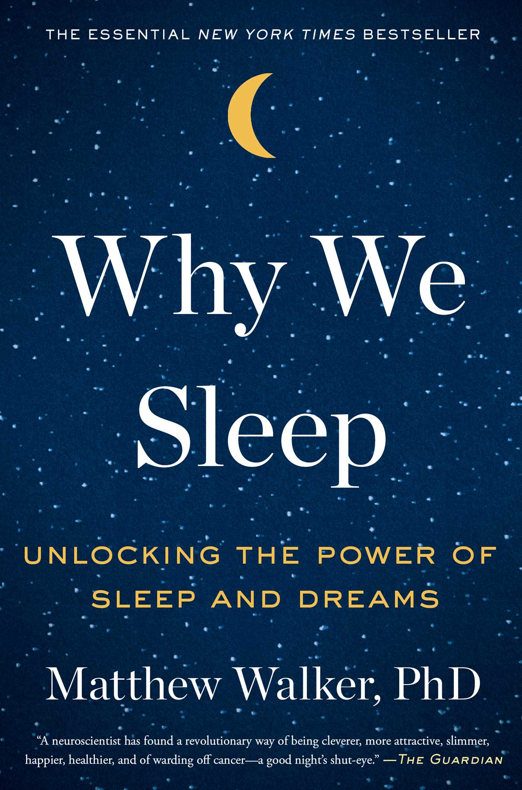

<!DOCTYPE html>
<html lang="en">
  <head>
    <meta charset="utf-8" />
    
    <title>Alex's Virtual Bookshelf</title>

    <!--  Swiper's CSS -->
    <link
      rel="stylesheet"
      href="https://unpkg.com/swiper/swiper-bundle.min.css"
    />
    <script src="https://cdnjs.cloudflare.com/ajax/libs/jquery/3.5.1/jquery.min.js"></script>

    <!-- CSS -->
    <style>
      html,
      body {
        position: relative;
        height: 100%;
      }

      body {
        background: #eee;
        font-family: Helvetica Neue, Helvetica, Arial, sans-serif;
        font-size: 14px;
        color: #000;
        padding: 20px;
      }

      .swiper-container {
        margin-top: 15%;

        width: 80%;
        height: 50%;
        padding-top: 100px;
        padding-bottom: 50px;
        background-image: url("assets/empty-wooden-shelves-vector-11518620.jpeg");
        background-position: bottom;
      }

      .wrap {
        width: 80%;
        height: 70%;
        border-radius: 100%;
        margin: 0 auto;
      }
      .wrap .card {
        display: block;
        width: 300px;
        height: 400px;
        transition: transform 1s;
        transform-style: preserve-3d;
        cursor: pointer;
        position: relative;
      }
      .wrap .card.flipped {
        transform: rotateY(180deg);
      }
      .wrap .card .front,
      .wrap .card .back {
        position: absolute;
        width: 98%;
        height: 98%;
        color: #fffdd0;
        font-size: 16px;
        -webkit-backface-visibility: hidden;
        backface-visibility: hidden;
        background: lightblue;
        border: 1px solid #4e3524;
      }
      .wrap .card .front img {
        object-fit: cover;
        width: 100%;
        height: 100%;
      }
      .wrap .card .front:after {
        position: absolute;
        bottom: -38%;
        left: 0;
        right: 0;
        font-size: 1.6em;
        color: rgba(255, 255, 255, 0.5);
        display: block;
        -webkit-backface-visibility: hidden;
        backface-visibility: hidden;
      }
      .wrap .card .back {
        transform: rotateY(180deg);
        background: #fffdd0;
        color: black;
        padding: 10px;
      }
      #title {
        text-align: center;
        font-weight: bold;
      }
      #author {
        text-align: center;
        font-size: 12px;
        margin-top: 5px;
        font-style: italic;
      }
      #description {
        text-align: left;
        font-size: 12px;
        margin-top: 10px;
      }
      @media (max-width: 767px) {
        .grid {
          display: block;
        }
        .grid .wrap {
          margin-bottom: 30px;
        }
      }
      .swiper-button-next {
        display: none;
      }
    </style>
  </head>

  <body>
    <!-- Swiper -->
    <div class="swiper-container mySwiper">
      <div class="swiper-wrapper">
        <!-- dynamically add books here -->
      </div>
      <div class="swiper-pagination"></div>
    </div>
    </div>

    <!-- Swiper JS -->
    <script src="https://unpkg.com/swiper/swiper-bundle.min.js"></script>

    <!-- Start JS Code-->
    <script>

      // create Swiper and specify parameters
      var swiper = new Swiper(".mySwiper", {
        direction: "horizontal",
        slidesPerView: 3,
        spaceBetween: 20,
        mousewheel: true,
        loop: true,
        freeMode: true,
        effect: "coverflow",
        coverflowEffect: {
          rotate: 50,
          stretch: 0,
          depth: 100,
          modifier: 1,
          slideShadows: false,
        },
        centeredSlides: true,
      });

      // Book class (to illustrate classes/objects in JS)
      class Book {
        constructor(title, author, description, coverLink) {
          this.title = title;
          this.author = author;
          this.description = description;
          this.coverLink = coverLink;
        }

        // returns formatted HTML to add to Swiper div
        getContent() {
          return (
            '<div class="swiper-slide"><div class="wrap"><div class="card"><div class="front">' +
            this.coverLink +
            '</div><div class="back"><div id="title">' +
            this.title +
            '</div><div id="author">' + this.author + '</div><div id="description">' + this.description +
            '</div></div></div></div></div>'
          );
        }
      }

      // My books
      // I added 10 for the purposes of demonstration. These summaries are quotes from online (not my own notes).
      let b1 = new Book(
        "Thinking, Fast and Slow",
        "Daniel Kahneman",
        `"Thinking Fast And Slow shows you how two systems in your brain are constantly fighting over control of your behavior and actions, and teaches you the many ways in which this leads to errors in memory, judgment and decisions, and what you can do about it."`,
        ''
      );

      let b2 = new Book(
        "Zero to One",
        "Peter Thiel",
        `"Zero To One is an inside look at Peter Thiel’s philosophy and strategy for making your startup a success by looking at the lessons he learned from founding and selling PayPal, investing in Facebook and becoming a billionaire in the process."`,
        ''
      );

      let b3 = new Book(
        "The Algebra of Happiness",
        "Scott Galloway",
        `"#1: Get ahead while you’re young. Your early working years are the most important for setting yourself up for future success, wealth and happiness. Invest, embrace compound interest, work hard, and avoid unrewarding status games.
          #2: Your partner is your most important life decision. Your choice of partner in life is the most important determinant of your future success and happiness. Out-of-sync relationships make everything harder.
          #3: You don’t have to follow your passion. Don’t get sucked into the narrative of following your passion. Find something you’re good at and become great at it. Once you’re great at it, the emotional and economic rewards of being great at it will make you passionate about it.
          #4: Stay fit, present and grateful. Exercise regularly, develop the ability to be truly present in the moment, and cultivate gratitude. All of these things are strongly correlated with greater happiness."`,
        ''
      );

      let b4 = new Book(
        "The New Jim Crow",
        "Michelle Alexander",
        `"Alexander details the history of race in America, moving from slavery to the Civil War to Reconstruction to the Jim Crow laws to the Civil Rights Movement. The Movement garnered an intense backlash that conservative politicians yoked in order to gain votes and implement a new, albeit subtler, racial separation. In the 1980s, Reagan began the War on Drugs not based on correct statistics about drug use (people of all races use, buy, and sell drugs at about the same rate) but in order to appease whites. “Law and order” rhetoric became de rigeur even amongst liberal politicians; no one wanted to be soft on crime, especially when the media blasted sensational stories about “crack whores” all over the papers and televisions. Even Clinton was responsible for some of the harshest anti-drug laws that harmed black communities already suffering from economic collapse."`,
        ''
      );

      let b5 = new Book(
        "Antisocial: Online Extremists, Techno-Utopians, and the Hijacking of the American Conversation",
        "Andrew Marantz",
        `"For several years, Andrew Marantz, a New Yorker staff writer, has been embedded in two worlds. The first is the world of social-media entrepreneurs, who, acting out of naïvete and reckless ambition, upended all traditional means of receiving and transmitting information. The second is the world of the people he calls "the gate crashers"--the conspiracists, white supremacists, and nihilist trolls who have become experts at using social media to advance their corrosive agenda."`,
        ''
      );

      let b6 = new Book(
        "Deaths of Despair",
        "Anne Case and Angus Deaton",
        `"Deaths of Despair and the Future of Capitalism paints a troubling portrait of the American dream in decline. For the white working class, today’s America has become a land of broken families and few prospects. As the college educated become healthier and wealthier, adults without a degree are literally dying from pain and despair. In this critically important book, Case and Deaton tie the crisis to the weakening position of labor, the growing power of corporations, and, above all, to a rapacious health-care sector that redistributes working-class wages into the pockets of the wealthy. Capitalism, which over two centuries lifted countless people out of poverty, is now destroying the lives of blue-collar America."`,
        ''
      );

      let b7 = new Book(
        "Give and Take",
        "Adam Grant",
        `"Give and Take is a 2013 self-help book by organizational psychologist and university professor Adam Grant. Taking its name from a famous cynicism by Mark Twain, that “the principle of give and take” is equivalent to “[the principle of] give one and take ten,” Grant posits the opposite: the principle is essential to a compassionate and symbiotic human civilization. Grant extols the virtue of altruism, arguing that it never produces a net zero effect; rather, it improves the conditions of both giver and taker in ways not usually appreciated, since its analysis is not easily quantified. Grant attempts to explain how we might undertake comparative analyses of the effects of altruistic actions. His central contention is that altruism begets success in ways that factors such as ability, opportunity, and motivation cannot. The book has been celebrated for elevating the usefulness of virtues above that of functional theories in work environments."`,
        ''
      );

      let b8 = new Book(
        "The Great Stagnation",
        "Tyler Cowen",
        `"The Great Stagnation argues that the American economy has reached a historical technological plateau and the factors that drove economic growth for most of America's history are no longer present. These figurative 'low-hanging fruit' include the cultivation of much free, previously unused land, technological breakthroughs in transport, refrigeration, electricity, mass communications, and sanitation, and the growth of education. Cowen, a professor of economics at George Mason University, theorizes that these factors have contributed to stagnation in the median American wage since 1973."`,
        ''
      );

      let b9 = new Book(
        "Nudge",
        "Richard H. Thaler and Cass R. Sunstein",
        `"In Nudge: Improving Decisions About Health, Wealth, and Happiness by Richard Thaler and Cass Sunstein, the authors provide information on how the configuration of the places in which we make decisions influences our choices. The quantity that we eat depends on the size of our plate, the foods we pick in the cafeteria depends on where they are placed at an eye level. The magazines we buy depends on what magazines are displayed at the checkout of the supermarket. However, the same tendency also affects decisions with more significant consequences, such as how much families would save and how they would invest in their futures savings; the kind of mortgage to take out; which medical insurance to choose; what cars to drive."`,
        ''
      );

      let b10 = new Book(
        "Why We Sleep",
        "Mathew Walker",
        `"Sleep is absolutely essential to all animals, including humans. Insufficient sleep reduces our learning, memory and cognitive abilities, causes brain impairment and increases the risks of numerous diseases from cancer to diabetes, coronary heart diseases and even death. On the other hand, sleep boosts our mental, emotional and physical health and capabilities in ways that no amount of drugs or medical interventions can provide."`,
        ''
      );

      // create array of books
      let bookshelfArray = [b1, b2, b3, b4, b5, b6, b7, b8, b9, b10];

      // append each book's HTML code using getContent() method
      for (i = 0; i < bookshelfArray.length; i++) {
        swiper.appendSlide(bookshelfArray[i].getContent());
      }

      // specify flip card functionality using jQuery library
      $(".wrap .card").click(function (evt) {
        evt.stopImmediatePropagation();
        $(this).toggleClass("flipped");
      });
    </script>
  </body>
</html>
